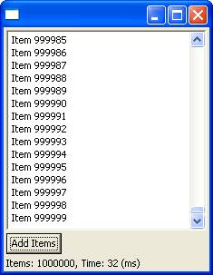
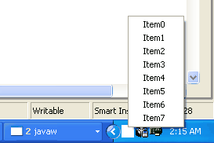

|
|
Eclipse launcher for Mac
OS X
|
The
Eclipse Launcher has been ported to Mac OS X.
- All Eclipse launcher arguments can be
specified via the "Eclipse" section in Eclipse's Info.plist
file. Please note that the standard "Java" section in
Info.plist is ignored since we are no longer using the
JavaApplicationStub. So if you want to run Eclipse on the 1.4.1 VM you
will have to specify the path to the 1.4.1 binary with the "-vm"
argument and not with the "JVMVersion" tag.
- When specifying the workspace location
via the "-data" argument, you can use tilde expansion as
known from /bin/sh. So "-data ~/Documents/workspace" will
put the workspace in your Documents folder.
|
|
|
Other Mac OS X
improvements |
Drag
and dropping views and editors now works on the Mac, and UI performance is
significantly better thanks to various SWT improvements. (Note that most
of these Mac improvements will also be in the upcoming Eclipse 2.1.1
maintenance release.) |
|
|
SWT support for right to
left languages |
SWT
now provides for the mirroring of controls as required by right-to-left
languages like Hebrew. The affected SWT API includes Display.map(),
SWT.LEFT_TO_RIGHT, SWT.RIGHT_TO_LEFT, SWT.LEAD, SWT.TRAIL, a new GC
constructor, and GC.getStyle(). This is implemented on Windows at this
point (but not on other window systems). |
|
|
SWT supports multiple
monitors |
Multiple
monitors are now supported by SWT. See the new Monitor class,
Display.getMonitors(), and Display.getPrimaryMonitor(). SWT clients should
use the new multi-monitor API when positioning and sizing dialogs, menus,
etc. This code snippet shows usage:
center a shell on the primary monitor. |
|
|
SWT supports color
cursors |
SWT
now support color cursors on Windows (on other window systems, the bit
depth is reduced internally if necessary). These code snippets show usage:
create
a color cursor from a source and a mask; create
a color cursor from an image file. |
|
|
Improved SWT clipboard |
SWT
support for the clipboard has been improved by the addition of way to
query whether a data type is available on the clipboard. SWT clients
should use this API when deciding to enable or disable a paste menu or
button (clients currently use Clipboard.getContent() which is slow and can
have negative side effects such as deleting data from the clipboard in a
cut operation). This code snippet shows correct usage:
enable/disable menu depending on clipboard content availability |
|
|
Added TIFF Image Decoding |
SWT
now supports TIFF image decoding for T4-encoding CCITT T.4 1D. |
|
|
Added MenuDetect Event |
You can now use the
SWT MenuDetect event to determine when to show a context (pop-up) menu (instead of hooking
MouseDown and testing the button). This code snippet shows correct usage:
show a popup menu (wait for it to close) |
|
|
|
Printing for Mac OS X
|
SWT for Mac OS X now supports the Quartz-based
Mac OS X Printing Manager. This allows SWT applications to print
high-quality output on all classes of raster and PostScript printers, to
generate PDF files, or to use the standard previewer.
|
|
|
Improved native tab folder
|
The SWT native tab folder (TabFolder)
can now be created with tabs located on either the bottom or the top, just
like the emulated tab folder (CTabFolder). |
|
|
Improved keyboard support
|
SWT keyboard support has been improved. There
are now key events for keys like Caps Lock, Scroll Lock, and Pause. And it
is now possible to distinguish key events coming from the numeric keypad. |
|
|
|
New Look for CTabFolder |
CTabFolder now supports a simple look (default) and a curved look.
|
|
|
Virtual Table |
Table now supports the SWT.VIRTUAL style. This allows you to create tables with large
amounts of data quickly. When TableItems are needed, they are created on-demand.
(Note: The API to do this may change between M8 and M9).

(SWT
snippet showing how to do this)
|
|
|
Tray & TrayItem |
You can now place icons in the System Tray. The System Tray is usually a row of small
icons located somewhere on the Task Bar on some operating systems.

(SWT
snippet showing how to do this)
|
|
|
TextLayout & TextStyle |
StyledText has been rewritten to use the new classes TextLayout & TextStyle. This means that
it will now correctly render complex scripts, BIDI, and baselines for bold fonts. TextLayout styling
includes font, color, line wrap, alignment, line spacing, hit test, measuring, caret navigation,
bidi reordering, and more. The TextLayout classes are available for general use however the API
will change between M8 and M9.
(SWT
snippet showing how to do this)
|
|
|
Display.post(Event) |
SWT now lets you generate low level keyboard and mouse events to enable automated
UI testing tools.

(SWT
snippet showing how to post mouse events)
(SWT
snippet showing how to post key events)
|
|
|
64 bit Linux GTK port (AMD) |
SWT now runs on 64 bit AMD processors running GTK Linux.
Eclipse on 64 bit GTK Linux is not yet production quality, and the Browser widget is not implemented,
however we would like people to go ahead and use this platform and report bugs against it.
|
|